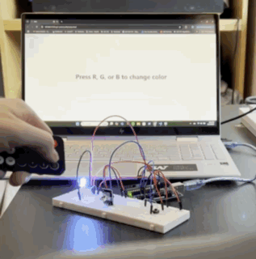
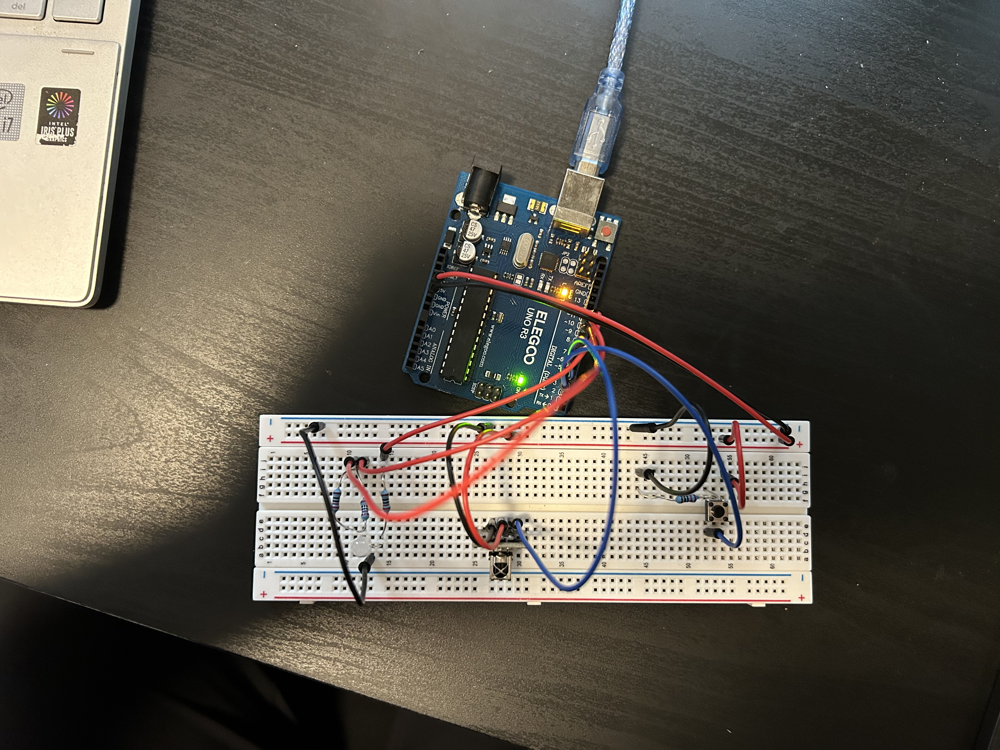
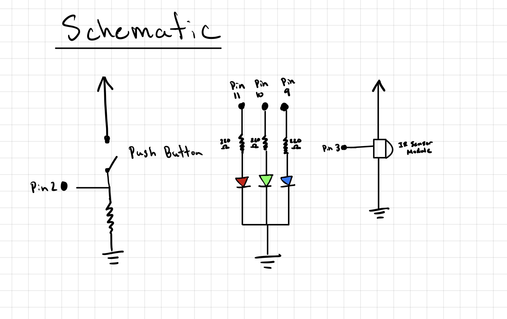

Arduino Code
#include // Imports library for IR remote
const int BUTTON_PIN = 2; // Identifies BUTTON_PIN as pin 2.
IRrecv remote(3); // IR receiver connected to pin 3
int red = 255, green = 255, blue = 255; // red, green, blue set to default white.
// Identifies red, green, blue pin as pin 11, 10, 9 respectively.
int RED_PIN = 11;
int GREEN_PIN = 10;
int BLUE_PIN = 9;
void setup() {
Serial.begin(9600); // Start serial communication for web and IR
pinMode(BUTTON_PIN, INPUT_PULLUP); // Button setup
remote.enableIRIn(); // Initialize IR receiver
// Set RGB pins as output
pinMode(RED_PIN, OUTPUT);
pinMode(GREEN_PIN, OUTPUT);
pinMode(BLUE_PIN, OUTPUT);
}
void loop() {
// Check for incoming serial data from the web
if (Serial.available() > 0) {
// Read RGB values from serial (Format: R, G, B)
red = Serial.parseInt(); // Get red value
green = Serial.parseInt(); // Get green value
blue = Serial.parseInt(); // Get blue value
// Print values to monitor for debugging.
Serial.print("Web color: ");
Serial.print(red);
Serial.print(", ");
Serial.print(green);
Serial.print(", ");
Serial.println(blue);
}
//Check for incoming IR signals
if (remote.decode()) {
long decodedData = remote.decodedIRData.decodedRawData; // Record IR signal.
// Change color based on the IR remote button pressed
if (decodedData == 0XEA15FF00) { // Volume Down Pressed
red = 0;
green = 0;
blue = 255;
Serial.println(decodedData, HEX); // Print HEX value to monitor.
}
else if (decodedData == 0XB946FF00) { // Volume Up Pressed
red = 255;
green = 0;
blue = 0;
Serial.println(decodedData, HEX);
}
else if (decodedData == 0XBF40FF00) { // Play/Pause Pressed
red = 0;
green = 255;
blue = 0;
Serial.println(decodedData, HEX);
}
remote.resume(); // Prepare for another IR signal
}
//Check the button press to reset the color
if (digitalRead(BUTTON_PIN) == HIGH) { // Button is pressed
Serial.println("RESET");
// Reset to white color
red = 255;
green = 255;
blue = 255;
}
// Set the RGB LED to the current color
analogWrite(RED_PIN, red);
analogWrite(GREEN_PIN, green);
analogWrite(BLUE_PIN, blue);
}
p5.js Code
const BAUD_RATE = 9600; // Matches Arduino baud rate
let port, connectBtn; // Declares global variables.
let red = 255, green = 255, blue = 255; // Default color
function setup() {
setupSerial(); // Initialize Serial connection
createCanvas(windowWidth, windowHeight); // Full-screen canvas
textFont("system-ui", 50);
textStyle(BOLD);
textAlign(CENTER, CENTER);
}
function draw() {
if (!checkPort()) return; // Exit if serial port is closed
listenForIR(); // Check for IR signals
// Update webpage background
background(red, green, blue);
fill(0);
text("Press R, G, or B to change color", windowWidth / 2, windowHeight / 2);
}
// Listen for IR signals and update colors
function listenForIR() {
if (!port.opened()) return;
let str = port.readUntil("\n").trim(); // Read serial input and trim whitespace
if (str.length === 0) return; // Ignore empty data
if (str === "RESET") { // If Arduino sends "RESET", reset webpage to white
red = 255; green = 255; blue = 255;
console.log("RESET received! Webpage set to white.");
return;
}
const irCode = parseInt(str, 16); // Convert hex string to number
console.log("Received IR Code:", irCode.toString(16).toUpperCase()); // Logs proper hex code.
// Check IR codes and update colors accordingly
if (irCode === 0XEA15FF00) { // RED IR signal
red = 0; green = 0; blue = 255;
sendColorToArduino();
} else if (irCode === 0XB946FF00) { // GREEN IR signal
red = 255; green = 0; blue = 0;
sendColorToArduino();
} else if (irCode === 0XBF40FF00) { // BLUE IR signal
red = 0; green = 255; blue = 0;
sendColorToArduino();
}
}
// Send RGB color values to Arduino via serial
function sendColorToArduino() {
if (!port.opened()) return;
const colorData = `${red},${green},${blue}\n`;
port.write(colorData);
console.log(`Sent color to Arduino: ${colorData}`);
}
// Handle KeyPress for RGB color change
function keyPressed() {
if (key === 'r') {
red = 255; green = 0; blue = 0;
} else if (key === 'g') {
red = 0; green = 255; blue = 0;
} else if (key === 'b') {
red = 0; green = 0; blue = 255;
}
sendColorToArduino();
}
// Serial Port Functions
function setupSerial() {
port = createSerial();
let usedPorts = usedSerialPorts();
if (usedPorts.length > 0) {
port.open(usedPorts[0], BAUD_RATE);
}
connectBtn = createButton("Connect to Arduino");
connectBtn.position(5, 5);
connectBtn.mouseClicked(onConnectButtonClicked);
}
function checkPort() {
if (!port.opened()) {
connectBtn.html("Connect to Arduino");
return false;
} else {
connectBtn.html("Disconnect");
return true;
}
}
function onConnectButtonClicked() {
if (!port.opened()) {
port.open(BAUD_RATE);
} else {
port.close();
}
}